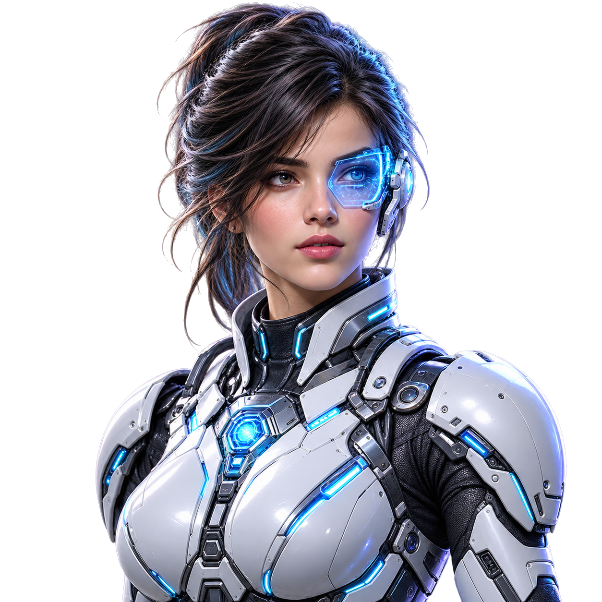

MISSIONS
SECTOR 01 // SUMMIT 4,820M
PATTERN OBSERVATORY
OBSERVATORY RESTORATION
0% (0/15)
GAME CONTROLS
WASD
MOVE
SHIFT
SPRINT
SPACE
JUMP
E
INTERACT / SOLVE
MOUSE
ROTATE CAM
PRESS E
TO CALIBRATE POINT
Lens Base Calibration
ARITHMETIC PROGRESSION (+5)
SYSTEM 01 // EAST WING
Celestial Pattern Lens
RECONSTRUCTION: 0 / 3 STAGES
STAGE 1 // NUMBER SERIES & PATTERNS
Lens Base Calibration

NOVA // Starward Sentinel
"Lens के बेस को स्थिर करने के लिए नंबर पैटर्न को पहचानो और लुप्त संख्या का पता लगाओ!"
SKILL: ARITHMETIC PROGRESSIONS (AP)
Identify the rule and find the missing number to align the optical base:
4, 9, 14, 19, [ ? ]
❌ Incorrect alignment! Analyze the difference pattern and try again.